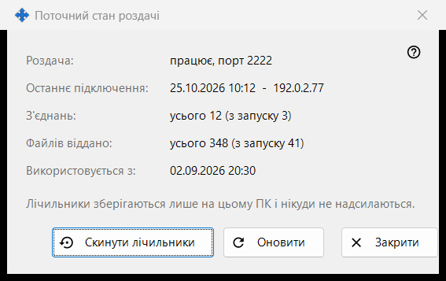
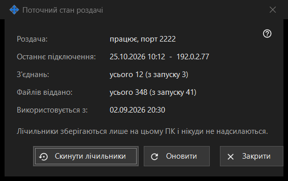

Поточний стан роздачі
Призначення
Показує поточний стан роздачі та її прості лічильники. Відкривається посиланням «Статистика» головного вікна.


Порядок дій
- Прочитайте стан угорі.
- Перевірте останнє підключення, кількість підключень і віддані файли.
- Натисніть «Оновити», щоб побачити нові значення.
- Натисніть «Скинути лічильники», щоб почати відлік заново.
- Натисніть «Закрити».
Елементи вікна
Стан
«Роздача:» показує, чи роздача працює і на якому порту, чи вона вимкнена, чи «немає зв'язку з сервером». «Використовується з:» показує, коли роздача запустилася.
Лічильники
«Останнє підключення:» показує час останнього підключення телефона або «ще не було». «З'єднань:» і «Файлів віддано:» показують загальну кількість і в дужках - кількість з останнього запуску. Лічильники зберігаються лише на цьому ПК і нікуди не надсилаються.
Оновити та скинути
«Оновити» знову зчитує значення із сервера. «Скинути лічильники» спершу запитує підтвердження: попередні значення відновити не вийде. Якщо скидання не вдалося, кнопка показує «Скидання не вдалося». «Закрити» виходить із вікна.
Налаштування менеджера · Налаштування спільного доступу SFTP · Налаштування сервера обміну